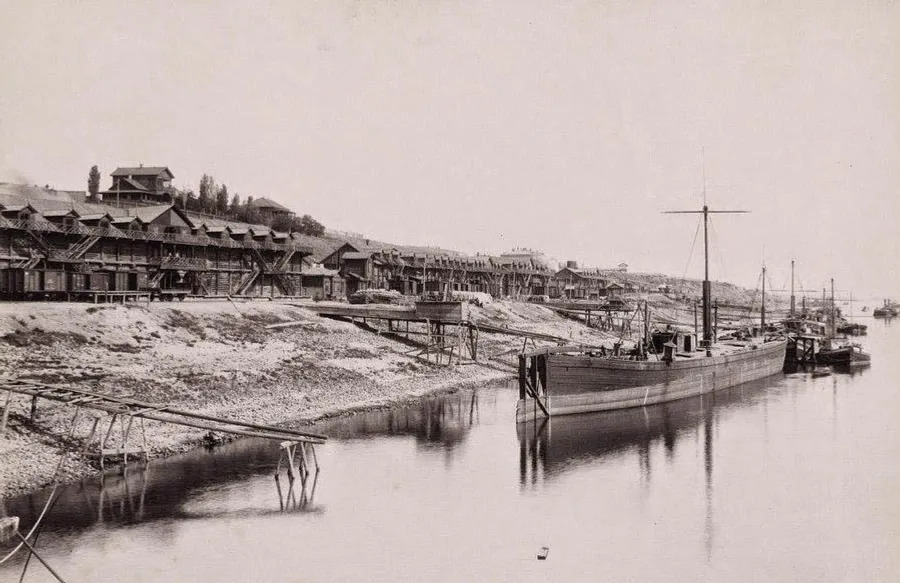
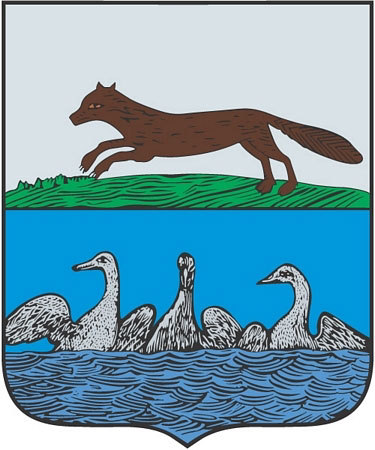
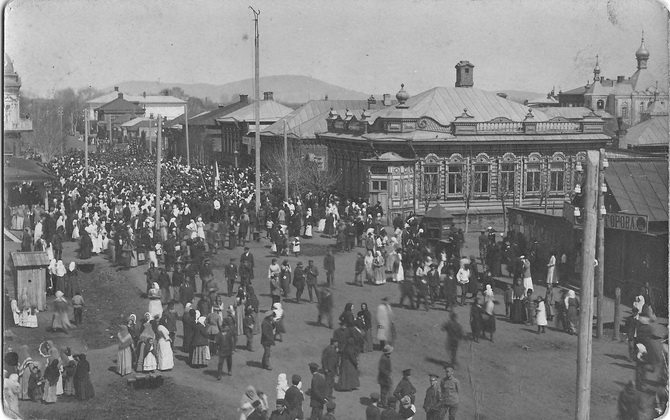
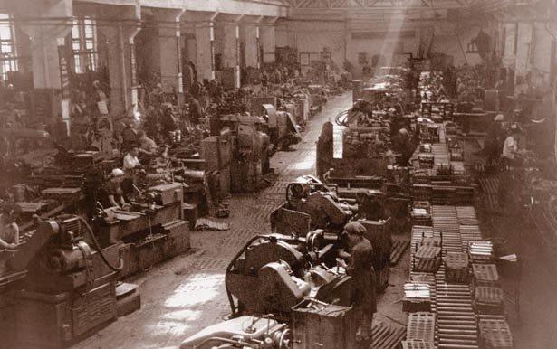
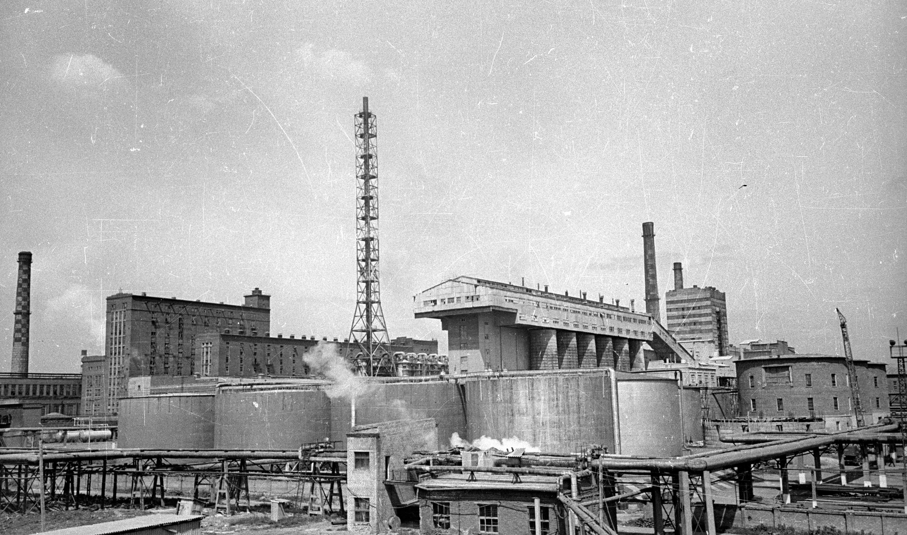
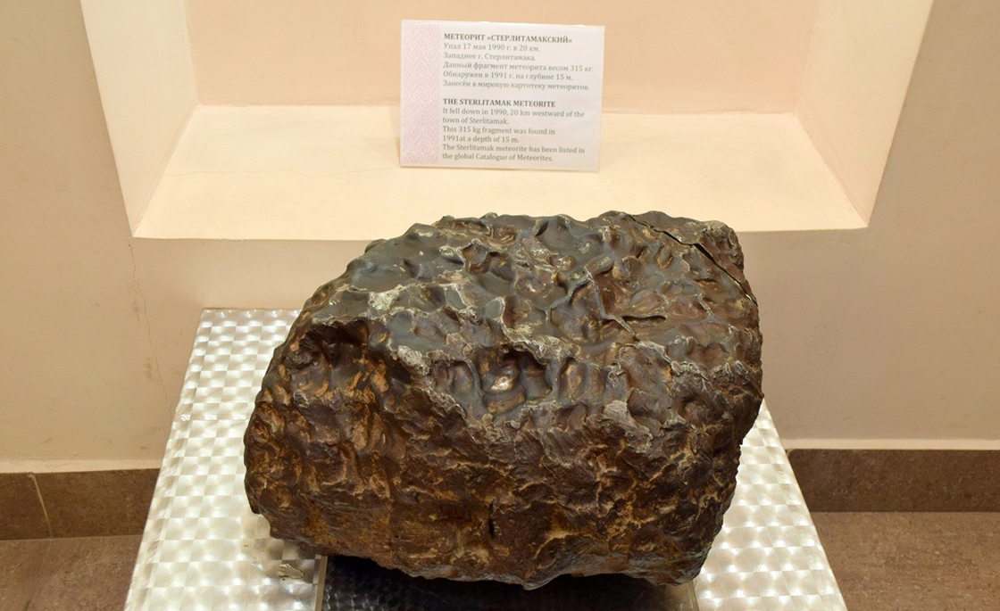
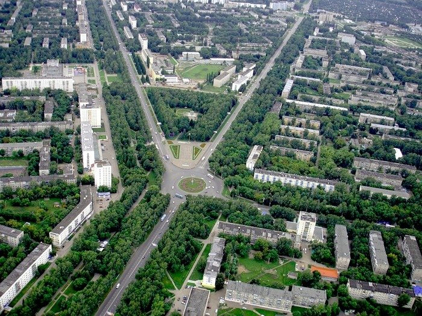

От основания соляной пристани в XVIII веке до первой столицы советской Башкирии и крупного индустриального центра.
С 1919 по 1922 год Стерлитамак имел статус первой столицы Автономной Башкирской Советской Республики, сыграв ключевую роль в становлении современной государственности Башкортостана.

В середине XVIII века возникла острая государственная необходимость в транспортировке соли из богатейших Илецких копей в центральные губернии Российской империи. Симбирский купец Савва Тетюшев разработал масштабный проект водного пути и предложил основать в устье реки Стерли при впадении в Ашкадар перевалочный пункт.
Весной 1766 года здесь развернулось строительство соляных складов, казачьих изб и верфи для постройки речных барок-коломенок. Уже в первую навигацию по реке Белой ушёл караван с сотнями тысяч пудов соли в Нижний Новгород и Казань. Именно соляной промысел вдохнул жизнь в будущее поселение.

Благодаря бурному росту торговли 23 декабря 1781 года указом императрицы Екатерины II слобода получила статус уездного города Стерлитамак в составе Уфимского наместничества. А в 1782 году был утверждён исторический герб: три серебряных гуся на золотом поле, символизирующие изобилие птицы в чистых водоёмах края.
В XIX веке город превратился в оживлённый торгово-промышленный узел Южного Урала. Купеческие династии Баязитовых, Кузнецовых и Дьяконовых строили кирпичные усадьбы, открывали торговые пассажи, кожевенные и мыловаренные заводы, сформировав неповторимый колорит купеческого Старого города.

В переломный период после революции и Гражданской войны Стерлитамак стал колыбелью современной башкирской автономии. В 1919 году он был провозглашён первой столицей только что созданной Автономной Башкирской Советской Республики (АБСР).
На протяжении трёх лет в городе работали БашЦИК, Совнарком и наркоматы республики. Здесь принимались фундаментальные решения по государственному устройству, развивалось национальное образование, открывались первые издательства и профессиональные театры, пока в 1922 году столичный статус не перешёл к Уфе.

В годы Великой Отечественной войны Стерлитамак принял десятки эвакуированных предприятий из западных регионов СССР: Одесский станкостроительный завод, Бакинский машиностроительный завод «Красный пролетарий», цеха Московского завода «Калибр», а также Славянский содовый завод.
В неимоверно сжатые сроки оборудование запускали прямо с колёс. Стерлитамак бесперебойно снабжал фронт высокоточными станками, корпусами снарядов и авиационным топливом. В учебных заведениях города действовали тыловые госпитали, вернувшие в строй тысячи раненых защитников Отечества.

Открытие гигантских известняковых запасов в Шиханах положило начало строительству крупнейшего содово-цементного комбината. В ноябре 1951 года предприятие выдало первую промышленную партию кальцинированной соды, сделав город лидером союзного масштаба.
Вслед за содовым гигантом появились предприятия по производству синтетического каучука, каустической соды и полимеров. Именно тогда была создана знаменитая оранжево-бело-жёлтая пачка пищевой соды, которая по сей день выпускается в Стерлитамаке и присутствует буквально в каждом доме страны.

В ночь на 17 мая 1990 года небо над городом прорезал ослепительный болид, за которым последовали громоподобный удар и содрогание почвы. В 20 км к западу от Стерлитамака, на совхозном поле, образовался кратер диаметром 10 метров и глубиной около 5 метров.
Экспедиция Института геохимии АН СССР извлекла из глины основной монолит массой 315 кг. Он оказался редким железным метеоритом возрастом свыше 4 миллиардов лет. Это падение вошло в число важнейших метеоритных событий XX века, а сам метеорит стал ценнейшим экспонатом научных музеев.

Стерлитамак по праву считается одним из самых зелёных и чистых городов не только Башкортостана, но и всей России. Во Всероссийском конкурсе на звание «Самый благоустроенный город России» Стерлитамак трижды — по итогам 1997, 2002 и 2005 годов — занимал второе место среди городов с населением свыше 100 тысяч человек.
По итогам 2006 и 2012 годов Стерлитамак стал абсолютным победителем этого престижного конкурса, дважды став «золотым» городом России. Развитая сеть экологичного троллейбусного транспорта, ухоженные скверы, цветущие проспекты и каскады фонтанов закрепили за городом статус образцового муниципалитета.

В августе 2020 года город оказался в центре внимания всей страны во время событий вокруг древнего шихана Куштау. Массовая солидарность жителей Стерлитамака и всей республики позволила защитить уникальный природный памятник: Куштау получил охранный статус заказника, а весь массив Шиханов вошёл в геопарк ЮНЕСКО «Торатау».
Сегодня Стерлитамак — крупнейший индустриальный, научный и студенческий центр региона с населением более 280 тысяч человек. В городе масштабно преображаются набережные рек Стерли и Ашкадар, благоустраиваются экопарки, реставрируется исторический купеческий центр, а промышленность развивает технологии «зелёной химии».
Познакомьтесь с древними коралловыми рифами — Шиханами и живописными реками Стерлитамака.
Перейти к природе и архитектуре